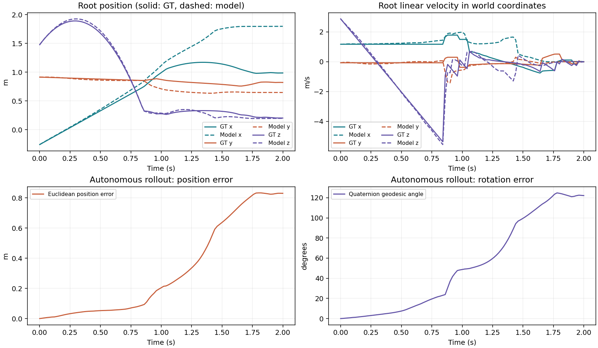

Trajectory 11000
ROLLOUT COMPLETERoot position RMSE0.2571 mRotation geodesic mean52.79°Linear velocity RMSE0.4708 m/s
상태 변화와 오차

선택한 데이터와 모델 정보
{
"id": 11000,
"split": "test",
"scenario": "toss",
"seed": 1152123829,
"directory": "trajectory_11000",
"available_steps": 100,
"requested_horizon": 100,
"completed_steps": 100,
"dt": 0.02,
"reason": null,
"diverged": false,
"model_name": "deepsets",
"checkpoint_meta": {
"seed": 0,
"epoch": 5,
"next_epoch": 5,
"batch_cursor": 0,
"global_step": 9770,
"val_loss": 0.06928695722707744,
"best_val_loss": 0.06928695722707744,
"dataset_fingerprint": "5556a167aba34801a431f7a68bace04d8db190cc46ed6deccf6cdc2d84a56d86",
"dataset_manifest": "data/cube-toss/manifest.json",
"description": "Research implementation; NeRD-like baseline is not an official reproduction",
"path": "outputs/visualization-checkpoints/trained-toss-20261019/deepsets-best.pt",
"model_config": {
"name": "deepsets",
"hidden_dim": 128,
"heads": 4,
"local_layers": 3,
"global_layers": 3,
"window_size": 64,
"points_per_face": 64,
"floor_points": 256,
"floor_extent": 1.5,
"face_tokens": 1,
"serialization": "hilbert",
"history": 1,
"no_velocity": false,
"no_inertia": false,
"mean_pool": false,
"random_groups": false,
"no_face_exchange": false
}
},
"rollout_metrics": {
"position_rmse": 0.2570691406726837,
"rotation_geodesic_rad": 0.921363890171051,
"linear_velocity_rmse": 0.4707542657852173,
"angular_velocity_rmse": 1.3030688762664795,
"joint_position_rmse": 0.0,
"joint_velocity_rmse": 0.0
},
"initial_condition": {
"position_world": [
-0.25939086079597473,
0.9136455059051514,
1.47757887840271
],
"quaternion_wxyz": [
0.8554397225379944,
0.054371222853660583,
-0.38291284441947937,
-0.3444479703903198
],
"linear_velocity_world": [
1.1743884086608887,
-0.06903324276208878,
2.8736445903778076
],
"angular_velocity_local": [
2.933218240737915,
2.383002519607544,
-6.294271945953369
]
},
"action_summary": {
"all_zero": true,
"max_abs": 0.0
},
"duration_seconds": 2.0,
"video_name": "comparison.mp4",
"render": {
"video": "docs/visualizations/trained-toss-20261019/deepsets/trajectory_11000/comparison.mp4",
"poster": "docs/visualizations/trained-toss-20261019/deepsets/trajectory_11000/comparison.png",
"frames": 101,
"fps": 50.0,
"width": 1280,
"height": 480,
"camera": {
"lookat": [
0.45579491555690765,
0.8359792828559875,
1.0462000295519829
],
"distance": 5.392527065246541,
"azimuth": 130.0,
"elevation": -24.0,
"gt_bounds": [
[
-0.6058010223097503,
0.4119028982930482,
-0.14487483229109638
],
[
1.5173908534235656,
1.260055667418927,
2.237274891395062
]
],
"mode": "fixed",
"fit": "ground_truth",
"shared_panels": true
}
}
}